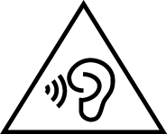

নিরাপত্তা সম্পর্কিত তথ্য
এই ডকুমেন্টটিতে মোবাইল কমিউনিকেশন ডিভাইসের নিরাপদ পরিচালনায় গুরুত্বপূর্ণ তথ্য থাকে। কিছু তথ্য আপনার ডিভাইসে প্রয়োগ নাও হতে পারে।
অনুগ্রহ করে আপনার ডিভাইসটি নিরাপদ এবং যথাযথ পরিচালনা নিশ্চিত করতে এবং কী ভাবে আপনার ডিভাইসটি যথাযথ ভাবে বিনষ্ট করতে হবে তা শিখতে মনোযোগ সহকারে নিরাপত্তার সমস্ত তথ্য পড়ুন।
বৈদ্যুতিন ডিভাইস
ডিভাইস ব্যবহার করা নিষিদ্ধ হলে আপনার ডিভাইস ব্যবহার করবেন না। যদি ডিভাইস ব্যবহার করার ফলে বিপদ হয় বা অন্যান্য বৈদ্যুতিন ডিভাইসে হস্তক্ষেপ সৃষ্টি হয় তবে তা ব্যবহার করবেন না।
চিকিৎসাগত উপাদানে বাধা প্রদান
- হাসপাতাল এবং হেলথ কেয়ারের সুবিধা ব্যাখ্যা করা নিয়ম ও প্রবিধানগুলি অনুসরণ করুন। নিষিদ্ধ জায়গায় আপনার ডিভাইস ব্যবহার করবেন না।
- কিছু ওয়্যারলেস ডিভাউস শ্রবণ যন্ত্র এবং পেসমেকারের পারফরম্যান্সে প্রভাব ফেলতে পারে। আও তথ্যের জন্য আপনার পরিষেবা প্রদানকারীর সাথে আলোচনা করুন।
- পেসমেকার নির্মাতারা পরামর্শ দেন যে পেসমেকারের সম্ভাব্য বাধা এড়াতে কোন ডিভাইস এবং পেসমেকারের মধ্যে ন্যূনতম 15 সেমি দূরত্ব বজায় রাখা উচিত। কোন পেসমেকার ব্যবহার করলে, পেসমেকারের বিপরীত দিকে ডিভাইসটি ধরুন এবং আপনার সামনের পকেটে ডিভাইস নেবেন না।
- এই ডিভাইসটি কোনো চিকিৎসার ডিভাইস নয়। স্বাস্থ্য-সম্পর্কিত অ্যাপস চিকিৎসাজনিত অবস্থার পূর্বাভাস, রোগ নির্ণয় বা চিকিৎসা করতে পরিকল্পিত নয়।
শ্রবণের নির্দেশিকা

- সম্ভাব্য শ্রবণের ক্ষতি প্রতিরোধ করতে দীর্ঘ সময় ধরে উচ্চ ভলিউমে শুনবেন না।
- উচ্চ ভলিউমে কোনো হেডসেট ব্যবহার করার ফলে আপনার শ্রবণ শক্তি ক্ষতিগ্রস্থ হতে পারে। ঝুঁকি কমাতে, নিরাপদ এবং স্বচ্ছন্দের মাত্রা অনুযায়ী হেডসেটের ভলিউম কমান।
- গাড়ি চালানোর সময়ে বেশি ভলিউম দিলে মনোযোগ নষ্ট হতে পারে এবং আপনার দুর্ঘটনার ঝুঁকি বাড়তে পারে।
অগ্নিদাহ্যর সঙ্গে এরিয়াস এবং এক্সপ্লোসিভ
- যেখানে শিখাযোগ্য বা বিস্ফোরক মজুত থাকে সেখানে ডিভাইসটি ব্যবহার করবেন না (যেমন কোনো গ্যাস স্টেশন, তেলের ডিপো বা রাসায়নিক প্ল্যান্ট)। আপনার ডিভাইসটিকে এই পরিবেশগুলিতে ব্যবহার বিস্ফোরণ বা অগ্নিকান্ডের ঝুঁকি বাড়ায়।
- সম্ভাব্য বিস্ফোরকযুক্ত পরিবেশে থাকার সময় আপনার ডিভাইসটি বন্ধ করুন। ব্যাটারিটি অপসারণ করবেন না, এটি অগ্নিকান্ডের বিপদ ঘটাতে পারে। এটি ছাড়াও, পাঠ্য বা প্রতীকগুলিতে সূচিত নির্দেশিকা অনুসরণ করুন।
- অগ্নিদাহ্য তরল, গ্যাস বা এক্সপ্লোসিভ রয়েছে এমন পাত্রে ডিভাইস রাখবেন না বা পরিবহন করবেন না।
যান চালনার নিরাপত্তা
- ডিভাইসটি ব্যবহার করার সময় স্থানীয় আইন এবং প্রবিধান পর্যবেক্ষণ করুন। দুর্ঘটনার ঝুঁকি হ্রাস করতে যান চালনার সময় আপনার ওয়্যারলেস ডিভাইস ব্যবহার করবেন না।
- গাড়ি চালানোর সময় মনোযোগ দিন। আপনার প্রথম দায়িত্ব হল নিরাপদে গাড়ি চালানো।
- গাড়ি চালানোর সময়ে ডিভাইস ধরবেন না। হ্যান্ডস-ফ্রী অ্যাকসেসারিজ ব্যবহার করুন।
- কল করা বা কলের উত্তর দেওয়ার সময়ে নিরাপদে রাস্তা পার হন এবং প্রথমে গাড়ি পার্ক করুন।
- RF সিগন্যাল মোটর গাড়ির বৈদ্যুতিন সিস্টেমকে প্রভাবিত করতে পারে। আরও তথ্যের জন্য গাড়ি নির্মাতার সাথে যোগাযোগ করুন।
- কোন মোটর গাড়ির এয়ার ব্যাগে বা এয়ার ব্যাগ বিস্তৃত এলাকায় ডিভাইস রাখবেন না। এয়ার ব্যাগ প্রসারিত হওয়ার সময়ে শক্তিশালী বলের জন্য আপনাকে আঘাত করবে।
- বিমানে ওড়ার সময় বা বোর্ডিংয়ের অব্যবহিত আগে, সরবরাহ করা নির্দেশিকা অনুসারে শুধুমাত্র আপনার ডিভাইস ব্যবহার করুন। কোনো বিমানে ওয়্যারলেস ডিভাইস ব্যবহার করা ওয়্যারলেস নেটওয়ার্কগুলিকে বাধা দিতে পারে, বিমান চালনায় বিপদ উপস্থিত করতে পারে বা বেআইনি হতে পারে।
- সাইকেল চালনা, দৌড় বা হাঁটার সময় হেডফোনগুলি ব্যবহার করবেন না কারণ এটি আপনার মনোসংযোগ বিক্ষিপ্ত করতে পারে ফলে যান দুর্ঘটনা ঘটতে পারে।
অপারেট করার পরিবেশ
- আপনার ডিভাইসের অংশগুলিতে বা অভ্যন্তরীণ সার্কিংগুলিতে ক্ষতি প্রতিরোধ করতে এটিকে ধূলাযুক্ত, ধোঁয়াযুক্ত, ভিজা বা নোংরা পরিবেশে বা চৌম্বকীয় ক্ষেত্রের কাছাকাছি ব্যবহার করবেন না।
- আপনার ডিভাইসকে বজ্র বিদ্যুতের কারণে হওয়া সম্ভাব্য বিপদ থেকে সুরক্ষিত করতে এটি বজ্র বিদ্যুত সহ ঝড়ের কারণে ব্যবহার করবেন না।
- ডিভাইস এবং আনুষাঙ্গিকগুলি একটি ভাল হাওয়া বাতাস-যুক্ত এবং শীতল স্থানে প্রত্যক্ষ সূর্যালোক থেকে দূরে রাখুন। তোয়ালে বা অন্যান্য অবজেক্ট দিয়ে আপনার ডিভাইস ঢাকা বা চাপা দেবেন না। বাক্স বা ব্যাগের মতো দুর্বল উত্তাপ ছড়ানোর মতো কোনো আধারে ডিভাইসটি স্থাপন করবেন না।
- এই ডিভাইস এবং এর চার্জারটি পৃষ্ঠতলের তাপমাত্রা পরিচালনা করা নিরাপত্তার মাপদণ্ডগুলিকে অনুসরণ করে। আপনার ডিভাইস গরম হতে পারে তাই এটি একটি স্বাভাবিক ঘটনা। আপনার ত্বককে গরম পৃষ্ঠতলে দীর্ঘ সময়ের জন্য উন্মুক্ত রাখার ফলে অস্বস্তি হতে পারে বা স্বল্প তাপমাত্রায় পুড়ে যাওয়ার লক্ষণ দেখা যেতে পারে (যেমন লাল বিন্দু বা পিগমেন্টেশন)। আপনি ক্ষতিকারক উত্তাপের অনুভূতি ভোগ করেন তবে অনুগ্রহ করে সাবধানতা অনুশীলন করুন। ডিভাইসটি দীর্ঘ সময়ের জন্য ব্যবহৃত হলে বা দীর্ঘ সময়কালের জন্য চার্জারে সংযুক্ত থাকলে ডিভাইস বা চার্জারটি স্পর্শ করা এড়ান। উদাহরণস্বরূপ, চার্জ করার সময় আপনার শরীরের নীচে বা আপনার লেপ বা বালিশের নীচে ডিভাইসটি রাখবেন না।
- দীর্ঘ সময়ের জন্য (কোন গাড়ির ড্যাশবোর্ডের মত) সরাসরি সূর্যালোকের মধ্যে ডিভাইস রাখবেন না।
- আগুন বা বৈদ্যুতিন শকের মত বাধা থেকে আপনার ডিভাইস বা অ্যাকসেসারিজকে বাঁচান এবং বৃষ্টি বা আর্দ্রতা এড়িয়ে যান।
- ডিভাইসকে হিটার, মাইক্রোওয়েভ ওভেন, স্টোভ, জল হিটার, রেডিয়েটার বা ক্যান্ডেলের মত তাপ এবং আগুনের মত উৎসগুলি থেকে দূরে রাখুন।
- পিনের মত কোন তীক্ষ্ণ বস্তু বা ইয়ারপিস বা স্পীকারের কাছে ডিভাইস রাখবেন না। ইয়ারপিস এই বস্তুগুলিকে আকর্ষণ করতে পারে এরফলে বস্তুতে আঘাত লাগতে পারে।
- মানুষের বা পোষ্যের চোখের সামনে সরাসরি আপনার ডিভাইসের ক্যামেরা ফ্ল্যাশ ব্যবহার করবেন না। অন্যথায় সাময়িকভাবে দৃষ্টিশক্তি হারাতে পারে বা চোখের ক্ষতি হতে পারে।
- পুনরাবৃত্ত ক্রিয়াকলাপগুলি সম্পাদনের সময় (উদাহরণস্বরূপ গেমগুলি খেলার সময়) আপনি আপনার হাত, বাহু, কব্জি, ঘাড়, কাঁধ বা আপনার দেহের অন্য অংশে সাময়িক অস্বস্তি বোধ করতে পারেন। আপনি কোনো অস্বস্তি অনুভব করলে, ব্যবহার বন্ধ করুন এবং কোনো চিকিৎসকের সাথে পরামর্শ করুন।
- অন্ধকার বা অস্থির পরিবেশে স্ক্রিনের দিকে তাকিয়ে থাকবেন না। চোখের উপরে চাপ প্রতিরোধ করতে স্ক্রিনের খুব কাছে থাকবেন না বা দীর্ঘ সময়ের জন্য স্ক্রিনের দিকে তাকিয়ে থাকবেন না। আপনি কোনো অস্বস্তি অনুভব করলে, ব্যবহার বন্ধ করুন এবং কোনো চিকিৎসকের সাথে পরামর্শ করুন।
- আপনি রঙ, ধাতু বা ডিভাইসটিতে ব্যবহৃত অন্যান্য ধাতুর প্রতি অ্যালার্জিক হলে ত্বকে প্রদাহ বা অন্যান্য অস্বস্তি অনুভব করতে পারেন। যদি তাই হয় তবে ব্যবহার বন্ধ করুন এবং কোনো চিকিৎসকের পরামর্শ নিন।
- আপনার শরীরের চারদিকে বা অবজেক্টের চারপাশে তার মোড়াবেন না। হাঁটার সময় বা নড়াচড়ার সময় নিজেকে বা অন্যান্যদের আঘাত প্রতিরোধ করতে আপনার আশেপাশে মনোযোগ দিন।
- আপনি নিজেকে আহত না করা বা আপনার ডিভাইসকে ক্ষতিগ্রস্থ না করা নিশ্চিত করতে আপনার পকেট, বেল্ট বা বাহুবন্ধনীতে ডিভাইসটি স্থাপন করার সময় আপনার আশেপাশে মনোযোগ দিন।
- শিশু বা পোষ্যকে ডিভাইস বা অ্যাকসেসরিজ কাটতে বা চুষতে অনুমতি দেবেন না। এর ফলে ক্ষতি বা বিস্ফোরণ ঘটতে পারে।
বাচ্চাদের নিরাপত্তা
- বাচ্চাদের নিরাপত্তা সম্পর্কিত সমস্ত সাবধানতা অনুসরণ করুন। বাচ্চাদের ডিভাইসটি বা এর আনুষাঙ্গিকগুলি নিয়ে খেলতে দেওয়া বিপজ্জনক হতে পারে। ডিভাইসটিতে দম বন্ধ হতে পারে এমন বিচ্ছিন্নযোগ্য অংশগুলি অন্তর্ভুক্ত। বাচ্চাদের থেকে দূরে রাখুন।
- ডিভাইস এবং এর আনুষাঙ্গিক বাচ্চাদের ব্যবহারের জন্য উদ্দীষ্ট নয়। বাচ্চাদের ডিভাইসটি প্রাপ্তবয়স্কদের পর্যবেক্ষণে ব্যবহার করা উচিত।
আনুষাঙ্গিকসমূহ
- একটি অনুমোদিত বা অসঙ্গত পাওয়ার অ্যাডাপ্টার, চার্জার বা ব্যাটারি ব্যবহার করার ফলে আপনার ডিভাইস ক্ষতিগ্রস্থ হতে পারে, এর জীবন কাল সংক্ষিপ্ত হতে পারে বা অগ্নিকান্ড, বিস্ফোরণ বা অন্যান্য বিপদের কারণ হতে পারে।
- ডিভাইস উৎপাদক দ্বারা এই মডেলটির সাথে ব্যবহারের জন্য শুধুমাত্র অনুমোদিত আনুষাঙ্গিক চয়ন করুন। অন্য যে কোনো প্রকারের আনুষাঙ্গিকের ব্যবহার ওয়্যারেন্টিকে অকার্যকর করতে, স্থানীয় প্রবিধানগুলি এবং আইনগুলিকে লঙ্ঘন করতে পারে এবং বিপজ্জনক হতে পারে। অনুগ্রহ করে আপনার এলাকায় অনুমোদিত আনুষাঙ্গিকের উপলব্ধতা সম্বন্ধে তথ্যের জন্য আপনার রিটেলারের সাথে যোগাযোগ করুন।
চার্জরের নিরাপত্তা
- ডিভাইসটি চার্জ করার সময় পাওয়ার অ্যাডাপ্টারটি ডিভাইসগুলির কাছাকাছি থাকা সকেটে প্লাগ-ইন আছে এবং সহজেই অ্যাক্সেসযোগ্য তা নিশ্চিত করুন।
- চার্জারটি বৈদ্যুতিন আউটলেটগুলি এবং ডিভাইস থেকে যখন ব্যবহার হয় না তখন আনপ্ল্যাগ করুন।
- চার্জারটি ফেলবেন না বা এতে কোনো প্রভাব ফেলবেন না।
- একটি স্থানে USB কেবলটি বারংবার বা অতিরিক্ত বাঁকাবেন না। USB কেবলটি সঠিক স্থানে সন্নিবেশ করান।
- কোনো কোণ থেকে USB কেবলটি সন্নিবেশ করাবেন না বা USB সংযোগকারীটি কেবলের প্রান্তে বাঁকাবেন না বা কেবলের প্রান্তে স্থান আলাদা করবেন না। USB কেবল এবং এর কানেক্টর নিয়মিত ভাবে পর্যবেক্ষণ করা উচিৎ। ক্ষতির কোনো লক্ষণ থাকলে সঙ্গে সঙ্গে কেবলটি ব্যবহার করা থামিয়ে দিন।
- চার্জিংয়ের পোর্টটি তরল, ধূলা, পাউডার, ধ্বংসস্তুপ এবং অন্যান্য পরিবাহী উপাদানগুলিকে শর্ট সার্কিট থেকে প্রতিরোধ করতে যা ক্ষয়প্রাপ্তি, বিবর্ণ হওয়া, গলে যাওয়া, পুড়ে যাওয়া এবং ডিভাইসে অন্যান্য ক্ষতি বা এমনকি অগ্নিকান্ডের মতো ঘটনা থেকে দূরে রাখুন।
- যদি চার্জার প্লাগ, কেসিং বা কেবলটি ক্ষতিগ্রস্থ হয় তবে এটি সঙ্গে সঙ্গে বন্ধ করা থামান। অবিচ্ছিন্ন ব্যবহারের ফলে বৈদ্যুতিক শক বা কোনো অগ্নিকান্ডের কারণ ঘটতে পারে।
- ভিজা হাতে পাওয়ার কর্ড স্পর্শ করবেন না বা চার্জারের সংযোগ বিচ্ছিন্ন করতে পাওয়ার কর্ডটি টানুন।
- ভিজা হাতে ডিভাইস বা চার্জারটি স্পর্শ করবেন না। এটি করার ফলে শর্ট সার্কিট, ত্রুটিপূর্ণ কার্য বা বিদ্যুতের শক লাগতে পারে।
- আপনার চার্জারটি জল, অন্যান্য তরল, অতিরিক্ত আর্দ্রতার সংস্পর্শে এলে এটিকে পরীক্ষার জন্য কোনো অনুমোদিত সার্ভিস সেন্টারে নিয়ে যান।
- চার্জারটি IEC60950-1/EN60950-1/UL60950-1-এ ধারা 2.5-এর প্রয়োজনীয়্তাগুলি পূরণ করে এবং পরীক্ষিত হয়েছে এবং জাতীয় বা স্থানীয় মানকগুলি অনুসারে অনুমোদিত।
- ডিভাইসটি শুধুমাত্র USB-IF লোগো বা USB-IF অনুসরণ প্রোগ্রাম সম্পূর্ণতা সহ পণ্যগুলিতে সংযুক্ত করুন।
ব্যাটারির নিরাপত্তা
- ব্যাটারির প্রান্তগুলি চাবি, গহনা বা অন্যান্য ধাতব সামগ্রীর মতো পরিবাহীর সাথে সংযোগ করবেন না। এটি করার ফলে ব্যাটারিটির শর্ট-সার্কিট হতে পারে এবং ফলে আঘাত বা পুড়ে যাওয়ার ঘটনা ঘটতে পারে।
- ব্যাটারিটি অতিরিক্ত উত্তাপ এবং প্রত্যক্ষ সূর্যালোক থেকে দূরে রাখুন। এটিকে মাইক্রোওয়েভ ওভেন, স্টোভ বা রেডিয়েটরের মতো কোনো উত্তপ্ত হওয়ার ডিভাইসের উপরে বা এর মধ্যে রাখবেন না। অতিরিক্ত উত্তপ্ত হলে ব্যাটারিগুলির বিস্ফোরণ হতে পারে।
- ব্যাটারিটি সংশোধন বা পুনরায় উৎপাদন করার চেষ্টা করবেন না, এতে বাইরের কোনো বস্তু সন্নিবেশ করাবেন না বা এটিকে জল বা অন্যান্য তরলে নিমজ্জিত বা এর সংস্পর্শে আনবেন না। এটি করার ফলে অগ্নিকান্ড, বিস্ফোরণ বা অন্যান্য বিপদ ঘটতে পারে।
- ব্যাটারি থেকে ছিদ্রপথে নির্গমন হতে থাকলে ইলেক্ট্রোলাইটের আপনার ত্বক বা চোখের সাথে প্রত্যক্ষ সংযোগ হচ্ছে না তা নিশ্চিত করুন। যদি ইলেক্ট্রোলাইট আপনার ত্বককে স্পর্শ করে বা আপনার চোখে ঝাপটা লাগে তবে সঙ্গে সঙ্গে পরিষ্কার জল দিয়ে পরিষ্কার করুন এবং কোনো চিকিৎসকের পরামর্শ নিন।
- ব্যাটারির বিকৃতি, রঙ পরিবর্তন বা চার্জিং বা স্টোরিংয়ের সময অতিরিক্ত উত্তপ্ত হওয়ার ক্ষেত্রে বা যদি ডিভাইস স্ট্যান্ডবাই সময়টি তাৎপর্যপূর্ণ ভাবে সংক্ষিপ্ত হয় তবে ব্যাটারিটি ক্ষতিগ্রস্থ হতে পারে। অবিরাম ব্যবহরের ফলে ব্যাটারির ছিদ্র পথে নির্গমন, অগ্নিকান্ড বা বিস্ফোরণ হতে পারে।
- ব্যাটারিগুলি আগুনে ফেলবেন না, এগুলির বিস্ফোরণ ঘটতে পারে। ক্ষতিগ্রস্থ ব্যাটারিগুলিরও বিস্ফোরণ ঘটতে পারে।
- ব্যবহৃত ব্যাটারিগুলি স্থানীয় প্রবিধানগুলি অনুসারে বিনষ্ট করুন। ব্যাটারির অনুপযুক্ত ব্যবহারের ফলে অগ্নিকান্ড, বিস্ফোরণ বা অন্যান্য বিপদ ঘটতে পারে।
- বাচ্চাদের বা গৃহপালিত পশুদের ব্যাটারি কামড়াতে বা চুষতে অনুমতি দেবেন না। এর ফলে ক্ষতি বা বিস্ফোরণ ঘটতে পারে।
- ব্যাটারিটি চূর্ণ বা ছিদ্র করবেন না বা এটিকে উচ্চ বাহ্যিক চাপের সংস্পর্শে আনবেন না। এর ফলে শর্ট সার্কিট বা অতিরিক্ত উত্তপ্ত হতে পারে।
- ব্যাটারিটি কোনো ত্রুটিপূর্ণ মডেল দিয়ে প্রতিস্থাপন করা হলে বিস্ফোরণ ঘটতে পারে।
- ডিভাইসটিতে একটি বিল্ট-ইন, অ-অপসারণযোগ্য ব্যাটারি থেকে থাকলে ব্যাটারিটি অপসারণের চেষ্টা করবেন না, অন্যথায় এটি ক্ষতিগ্রস্থ হতে পারে। ব্যাটারিটি প্রতিস্থাপন করতে অনুগ্রহ করে একটি অনুমোদিত সার্ভিস সেন্টারে নিয়ে যান।
- শুধুমাত্র উপযুক্ত কোনো চার্জিংয়ের সিস্টেমে ব্যাটারিটি ব্যবহার করুন। ব্যাটারিটি কোনো একটি উপযুক্ত ব্যাটারি দিয়ে প্রতিস্থাপন করুন। অযোগ্য ব্যাটারি বা চার্জারের ব্যবহারের ফলে অগ্নিকান্ড, বিস্ফোরণ, ছিদ্র পথে নির্গমন বা অন্যান্য বিপদ ঘটতে পারে।
- ব্যাটারিটি আলগা করবেন না বা খুলবেন না, চূর্ণ, বাঁকানো বা বিকৃতি, ছিদ্র বা ছিন্ন করবেন না। অন্যথায় এর ফলে ইলেকট্রোলাইট ছিদ্র পথে নির্গমন, অতিরিক্ত উত্তপ্ত হওয়া, অগ্নিকান্ড বা বিস্ফোরণ হতে পারে।
- ব্যাটারির প্রান্তগুলি ঝালাই করবেন না বা খুলে ফেলবেন না। এর ফলে ইলেকট্রোলাইট ছিদ্র পথে নির্গমন, অতিরিক্ত উত্তপ্ত হওয়া, অগ্নিকান্ড বা বিস্ফোরণ হতে পারে।
পরিষ্কার করা এবং সংরক্ষণ
- ডিভাইস এবং আনুষাঙ্গিকগুলি শুষ্ক রাখুন। এটিকে কোনো মাইক্রোওয়েভ ওভেন বা হেয়ার ড্রায়ারের মতো বাহ্যিক উত্তাপের উৎস থেকে শুষ্ক রাখার প্রয়াস করবেন না।
- দীর্ঘ সময় ধরে আপনার ডিভাইসটি চার্জ দেওয়া বা ব্যাটারিটিকে দীর্ঘ সময়ের জন্য অব্যবহৃত রেখে দেওয়া ব্যাটারিটির আয়ুষ্কালকে সংক্ষিপ্ততর করে এবং পারফরম্যান্স হ্রাস করে।
- আপনার ডিভাইস বা আনুষাঙ্গিকগুলিকে অতিরিক্ত উত্তাপ বা ঠান্ডার সংস্পর্শে আনবেন না। এই পরিবেশগুলি যথাযথ কার্যকারিতায় হস্তক্ষেপ করতে এবং অগ্নিকান্ড বা বিস্ফোরণ ঘটাতে পারে।
- ঘর্ষণ এড়ান, না হলে এর ফলে অতিরিক্ত উত্তপ্ত হওয়া, অগ্নিকাণ্ড বা বিস্ফোরণ হতে পারে।
- আপনি এটি ডিভাইসটি পরিষ্কার বা রক্ষণাবেক্ষণ করার আগে এটি ব্যবহার বন্ধ করুন, সমস্ত অ্যাপ্লিকেশন থামান এবং এর সাথে সংযুক্ত সমস্ত কেবল সংযোগ বিচ্ছিন্ন করুন।
- ডিভাইস বা আনুষাঙ্গিকগুলি পরিষ্কার করতে কোনো রাসায়নিক ডিটারজেন্ট, পাউডার বা অন্যান্য রাসায়নিক এজেন্ট ব্যবহার করবেন না (যেমন অ্যালকোহল এবং বেঞ্জেন)। এই উপাদানগুলির ফলে অংশগুলির ক্ষতির হতে পারে বা একটি অগ্নিকান্ডের বিপদ ঘটতে পারে। ডিভাইস এবং আনুষাঙ্গিকগুলি পরিষ্কার করতে একটি পরিষ্কার, নরম ও শুষ্ক কাপড় ব্যবহার করুন।
- চৌম্বকীয় স্ট্রাইপ সহ কার্ডগুলিকে (যেমন ব্যাঙ্কের কার্ডগুলি) দীর্ঘ সময়কালের জন্য ডিভাইসের সংস্পর্শে রাখবেন না কারণ ডিভাইসের চৌম্বকীয় ক্ষেত্রটি চৌম্বকীয় স্ট্রাইপটিকে ক্ষতিগ্রস্থ করতে পারে।
- ডিভাইস এবং এর আনুষাঙ্গিকগুলি খুলে ফেলবেন না বা পুনরায় তৈরি করবেন না। এটি ওয়্যারেন্টিকে বাতিল করে এবং উৎপাদককে ক্ষতির ফলে দায় থেকে মুক্ত করে। কোনো ক্ষতির ক্ষেত্রে সহায়তা বা সারাইয়ের জন্য কোনো অনুমোদিত সার্ভিস সেন্টারের সাথে যোগাযোগ করুন।
- আপনার ডিভাইসটি কোনো কঠিন বস্তু দ্বারা আঘাতের কারণে ক্ষতিগ্রস্থ হলে বা কোনো শক্তিশালী প্রভাবে আক্রান্ত হলে স্পর্শ করবেন না বা কোনো ভাঙা টুকরো সরানোর প্রয়াস করবেন না। ডিভাইসটি সঙ্গে সঙ্গে ব্যবহার করা থামান এবং কোনো অননুমোদিত সার্ভিস সেন্টারে যোগাযোগ করুন।
- কোনো SIM কার্ড, মেমোরি কার্ড বা ডেটা কেবল প্রবেশ করানোর সময় এটি সঠিক দিকে প্রবেশ করানো হচ্ছে তা নিশ্চিত করতে সাবধানতা অনুশীলন করুন। ডেটা স্থানান্তর হওয়ার সময় ডেটা কেবলটি সরাবেন না কারণ এর ফলে ডেটার হানি ঘটতে পারে বা আপনার ডিভাইস এবং এর আনুষাঙ্গিককে ক্ষতি করতে পারে।
আপৎকালীন কলগুলি
আপৎকালীন কলগুলির উপলব্ধতা আপনার সেলুলার নেটওয়ার্কের গুণমান, পরিষেবা প্রদানকারী এবং স্থানীয় আইন এবং প্রবিধানগুলির বিবেচনাধীন। চিকিৎসা সম্পর্কিত আপৎকালীন অবস্থার মতো জটিল যোগাযোগের জন্য কখনোই আপনার ডিভাইসের উপরে সম্পূর্ণ নির্ভর করবেন না। নেটওয়ার্ক সিগন্যাল ছাড়া কোনো এলাকায় বা যেখানে নেটওয়ার্ক সিগন্যাল দুর্বল এমন স্থানে যাওয়ার আগে আপনার আপৎকালীন পরিষেবাগুলির সাথে যোগাযোগের জন্য একটি বিকল্প পদ্ধতির পরিকল্পনা করা উচিৎ।

কলিংয়ের কার্যকারিতা সহ ডিভাইসগুলিতে প্রযোজ্য।
পরিবেশগত সুরক্ষা
- ডিভাইস এবং পাওয়ার অ্যাডাপ্টার, হেডসেট এবং ব্যাটারির মতো এর আনুষাঙ্গিকগুলি (যদি অন্তর্ভুক্ত থাকে) বাড়ির আবর্জনার সাথে নষ্ট করা উচিৎ নয়।
- ডিভাইস এবং এর আনুষাঙ্গিকগুলি বিনষ্ট করা স্থানীয় প্রবিধানের বিবেচনাধীন। যথাযথ সংগ্রহ এবং রিসাইক্লিং সমর্থন করুন।
ব্যক্তিগত তথ্য এবং ডেটা নিরাপত্তা
আপনার ডিভাইসে কিছু ফাংশন বা তৃতীয়-পক্ষের অ্যাপ্লিকেশনের ব্যবহারের ফলে আপনার ব্যক্তিগত তথ্য এবং ডেটা হারিয়ে যেতে পারে বা অন্যরা এটি অ্যাক্সেস করতে পারে। নিম্নোক্ত পদ্ধতিগুলি ব্যবহার করুন যা আপনার ব্যক্তিগত তথ্য সুরক্ষিত রাখতে আপনাকে সহায়তা করবে:
- অননুমোদিত ব্যবহার আটকাতে কোনো নিরাপদ স্থানে আপনার ডিভাইস রাখুন।
- আপনার ডিভাইসের স্ক্রিন লকে সেট করুব এবং কোন পাসওয়ার্ড বা আনলকের প্যাটার্ন সেট করুন।
- পর্যায়ক্রমে ব্যাক আপের ব্যক্তিগত তথ্য আপনার SIM কার্ড, মেমোরি কার্ড বা আপনার ডিভাইসের মেমোরিতে সঞ্চিত আছে। আপনি অন্য কোন ডিভাইসে বদলালে আপনার পুরোনো ডিভাইস থেকে আপনার যে কোন ব্যক্তিগত তথ্য সরানো বা মোছার বিষয়ে নিশ্চিত হয়ে নিন।
- আপনার ডিভাইস কোন ভাইরাসের দ্বারা সংক্রমণ হওয়া আটকাতে অপরিচিত ব্যক্তির বার্তা বা ইমেলগুলি খুলবেন না।
- আপনার ডিভাইস ব্যবহারের সময়ে ইন্টারনেট ব্রাউজ করার ক্ষেত্রে আপনার ব্যক্তিগত তথ্য চুরি হওয়া আটকাতে এমন কোন ওয়েবসাইটে যাবেন না যাতে নিরাপত্তার ঝুঁকি থাকতে পারে।
- আপনি পোর্টেবেল Wi-Fi হটস্পট বা Bluetooth এর মত পরিষেবাগুলি ব্যবহারের সময়ে অননুমোদিত অ্যাক্সেস আটকাতে এই পরিষেবাগুলির জন্য পাসওয়ার্ড সেট করুন। ব্যবহার না করার সময় এই পরিষেবাগুলি বন্ধ করুন।
- ডিভাইসের নিরাপত্তা সফ্টওয়্যার ইন্সটল করুন এবং নিয়মিতভাবে ভাইরাসের জন্য স্ক্যান করুন।
- কোন আইনসঙ্গত উৎস থেকে তৃতীয়-পক্ষের অ্যাপ্লিকেশনগুলি অর্জনের বিষয়ে নিশ্চিত হয়ে নিন। ডাউনলোড করা তৃতীয়-পক্ষের অ্যাপ্লিকেশনগুলি ভাইরাসের জন্য স্ক্যান করা হয়েছে।
- নিরাপত্তা সফ্টওয়্যার বা Huawei এর রিলিজ করা প্যাচগুলি বা অনুমোদিত তৃতীয়-পক্ষের অ্যাপ্লিকেশন প্রদানকারী ইন্সটল করুন।
- আপনার ডিভাইস আপডেট করার জন্য অনুমোদিত তৃতীয়-পক্ষের সফ্টওয়্যার ব্যবহার করলে তাতে আপনার ডিভাইসের ক্ষতি হতে পারে বা তাতে আপনার ব্যক্তিগত তথ্যের ক্ষেত্রে ঝুঁকি হতে পারে। এটি প্রস্তাবিত যে আপনি আপনার ডিভাইসের অনলাইন আপডেট ফিচারের মাধ্যমে আপডেট করেছেন বা Huawei থেকে আপনার ডিভাইসের মডেলের জন্য অফিসিয়াল আপডেট প্যাকেজ ডাউনলোড করেছেন।
- কিছু অ্যাপ্লিকেশন প্রয়োজন এবং অবস্থান তথ্য প্রেরণ করা দরকার। ফলস্বরূপ, কোন তৃতীয় পক্ষ আপনার অবস্থান তথ্য ভাগ করতে পারেন।
- কিছু তৃতীয়-পক্ষের অ্যাপ্লিকেশন প্রদানকারী আপনার ডিভাইসে তাদের পণ্য ও পরিষেবাদির উন্নতির জন্য তথ্য সংগ্রহ, সনাক্ত এবং প্রদর্শন করতে পারে।
বিনষ্ট করা এবং রিসাইক্লিং সম্পর্কিত তথ্য

আপনার পণ্য, ব্যাটারি, সহায়ক পুস্তিকা বা প্যাকেজিংয়ে চাকাযুক্ত বিনের প্রতীক আপনাকে সমস্ত বৈদ্যুতিন পণ্য এবং ব্যাটারিকে তাদের কার্যকালের শেষে অবশ্যই পৃথক বর্জ্য সংগ্রহের কেন্দ্রে নিয়ে যাওয়া উচিৎ; এগুলি বাড়ির আবর্জনার সাথে স্বাভাবিক বর্জ্যের স্ট্রিমে কোনোমতেই বিনষ্ট করা উচিৎ নয় তা স্মরণ করিয়ে দেয়। ব্যবহারকারীর দায়িত্ব হল স্থানীয় আইন অনুসারে ওয়েস্ট ইলেক্ট্রিকাল অ্যান্ড ইলেকট্রনিক ইক্যুইপমেন্ট (WEEE) এবং ব্যাটারিগুলির পৃথক রিসাইক্লিংয়ের জন্য একটি নির্ধারিত সংগ্রহের কেন্দ্র বা পরিষেবায় বিনষ্ট করা।
সঠিক সংগ্রহ ও আপনার উপকরণের পুনর্ব্যবহার নিশ্চিত করে যে EEE বর্জ্য এমন একটি পদ্ধতিতে পুনর্চালিত হয়েছে যে যা মূল্যবান সামগ্রী সংরক্ষণ করে এবং মানুষের স্বাস্থ্য ও পরিবেশ, অনুপযুক্ত পরিচালনা, আপতিক ফাটল, ক্ষতি থেকে বাঁচায় এবং/বা এর আয়ুষ্কালের শেষে অযথাযথ পুনর্ব্যবহার স্বাস্থ্য ও পরিবেশের জন্য ক্ষতিকারক হতে পারে। কোথায় এবং কিভাবে আপনার EEE বর্জ্য ফেলবেন সেই সম্বন্ধে আরও তথ্যের জন্য, অনুগ্রহ করে আপনার স্থানীয় কর্তৃপক্ষ, রিটেলার বা ঘরের বর্জ্য ফেলার পরিষেবার সাথে যোগাযোগ করুন বা ওয়েবসাইটে যান http://consumer.huawei.com/en/।
বিপজ্জনক পদার্থ হ্রাস
এই ডিভাইস এবং যে কোন বৈদ্যুতিন অ্যাকসেসারিজ কিছু বিপদজ্জনক পদার্থ বৈদ্যুতিক এবং বৈদ্যুতিন উপকরণ যেমন EU REACH, RoHS এবং ব্যাটারি (যেখানে যুক্ত আছে) নিয়মাবলী ইত্যাদির সীমিত ব্যবহারের ক্ষেত্রে স্থানীয় প্রযোজ্য নিয়মের সাথে সঙ্গতিপূর্ণ। REACH এবং RoHS এর নিয়ম মেনে চলার জন্য, অনুগ্রহ করে আমাদের ওয়েব সাইটে যান http://consumer.huawei.com/certification।
আইনি বিজ্ঞপ্তি
এই ম্যানুয়ালের কোনো অংশই কোনো ফর্ম বা কোনো উপায়ে Huawei Technologies Co., Ltd. এবং এর অনুমোদিত সংস্থাগুলির ("Huawei") আগাম লিখিত সম্মতি ছাড়া পুনরুৎপাদন বা হস্তান্তর করতে নাও পারা যেতে পারে।
এই ম্যানুয়ালে বর্ণিত পণ্যটিতে Huawei এবং সম্ভাব্য লাইসেন্সধারকদের কপিরাইটযুক্ত সফ্টওয়্যার থাকতে পারে। কোনো উপায়েই গ্রাহকরা উল্লিখিত সফ্টওয়্যারটি কোনো উপায়ে পুনরুৎপাদন, বিতরণ, ঈষৎ পরিবর্তন, পরিষেবা ইঞ্জিনিয়ার, লিজ, অ্যাসাইন বা এর উপলাইসেন্স দান করতে পারবে না, যদি না এ জাতীয় বিধিনিষেধ কোনো প্রযোজ্য আইন দ্বারা নিষেধাজ্ঞাপ্রাপ্ত থাকে বা এ জাতীয় ক্রিয়াকলাপ স্ব স্ব কপিরাইট ধারকদের দ্বারা অনুমোদিত হয়।
ট্রেডমার্ক এবং অনুমতিগুলি
,  , এবং হল Huawei Technologies Co., Ltd.-এর ট্রেডমার্ক বা নিবন্ধিত ট্রেডমার্ক।
, এবং হল Huawei Technologies Co., Ltd.-এর ট্রেডমার্ক বা নিবন্ধিত ট্রেডমার্ক।
অন্যান্য ট্রেডমার্ক, পণ্য, সফ্টওয়্যার এবং সংস্থার নামগুলি তাদের স্ব স্ব মালিকদের সম্পত্তি হতে পারে।
বিজ্ঞপ্তি
এখানে বর্ণিত এই পণ্যের এবং এর আনুষাঙ্গিকগুলির কয়েকটি বৈশিষ্ট্য ইনস্টল থাকা সফ্টওয়্যার, স্থানীয় নেটওয়ার্কের ক্ষমতা এবং সেটিংসের উপরে নির্ভরশীল হয় এবং তাই সক্রিয় নাও হতে পারে বা স্থানীয় নেটওয়ার্ক পরিচালক বা নেটওয়ার্ক পরিষেবা সরবরাহকারীদের মধ্যে সীমাবদ্ধ হতে পারে।
এই ভাবে এখানে বর্ণিত বিবরণ আপনার কেনা পণ্য বা এর আনুষাঙ্গিকগুলির সাথে নাও মিলতে পারে।
Huawei আগাম বিজ্ঞপ্তি এবং কোনো দায়বদ্ধতা ছাড়াই এই ম্যানুয়ালে থাকা কোনো তথ্য বা স্পেসিফিকেশন পরিবর্তন বা সংশোধন করার অধিকার রক্ষণ করে।
তৃতীয় পক্ষের সফ্টওয়্যার প্রতিবেদন
Huawei-এর এই পণ্যের সাথে বিতরিত এই তৃতীয় পক্ষের সফ্টওয়্যার এবং অ্যাপ্লিকেশনগুলির মেধা সম্পত্তির মালিকানা নেই। সুতরং, Huawei তৃতীয় পক্ষের সফ্টওয়্যার এবং অ্যাপ্লিকেশনের জন্য কোনো প্রকারের ওয়্যারেন্টি সরবরাহ করবে না। Huawei যে গ্রাহকরা তৃতীয় পক্ষের সফ্টওয়্যার এবং অ্যাপ্লিকেশনগুলি ব্যবহার করে তাদের সহায়্তা দেবে না বা তৃতীয় পক্ষের সফ্টওয়্যার এবং অ্যাপ্লিকেশনগুলির কার্যকারিতা এবং পারফরম্যান্সের জন্য দায়বদ্ধ বা দায়ী হবে না।
তৃতীয় পক্ষের সফ্টওয়্যার এবং অ্যাপ্লিকেশনের পরিষেবাগুলির যে কোনো সময়ে বাধাপ্রাপ্ত বা অবসান হতে পারে এবং Huawei কোনো সামগ্রী বা পরিষেবার উপলব্ধতার নিশ্চয়তা দেয় না। তৃতীয় পক্ষের পরিষেবা সরবরাহকারীরা Huawei-এর নিয়ন্ত্রণের বাইরে নেটওয়ার্ক বা প্রেরণের সরঞ্জামগুলির মাধ্যমে সামগ্রী এবং পরিষেবাদি সরবরাহ করে। প্রযোজ্য আইন অনুসারে সর্বাধিক প্রসারণীয়তা অনুসারে, এটি বর্ণিত ভাবে প্রতিবেদিত যে Huawei তৃতীয় পক্ষের পরিষেবা সরবরাহকারীদের দ্বারা ক্ষতিপূরণ হবে না বা পরিষেবাগুলির দ্বারা সরবরাহ করা হবে না বা তৃতীয়-পক্ষের সামগ্রী বা পরিষেবার বাধা বা অবসানের জন্য দায়বদ্ধ হবে না।
Huawei এই পণ্যে ইনস্টল হওয়া বা কোনো প্রকারের আপলোড বা ডাউনলোড হওয়া তৃতীয় পক্ষের কাজগুলির জন্য কোনো সফ্টওয়্যারের যা পাঠ্য, চিত্র, ভিডিও বা সফ্টওয়্যার ইত্যাদির আইনি বৈধতা, গুণমান বা অন্যান্য দিকগুলির জন্য দায়বদ্ধ হবে না। গ্রাহকরা সফ্টওয়্যার এবং এই পণ্যের মধ্যে যে কোনো ও সমস্ত প্রভাব, এর মধ্যে অসঙ্গতি যা সফ্টওয়্যার ইনস্টল করা বা তৃতীয় পক্ষের কাজগুলি আপলোড বা ডাউনলোড করার সমস্ত ঝুঁকি বহন করবে।
এই পণ্যটি ওপেন-সোর্স Android প্ল্যাটফর্মের ভিত্তিতে তৈরি। Huawei প্ল্যাটফর্মে আবশ্যিক পরিবর্তনগুলি করেছে। সুতরাং, এই পণ্যটি মানক Android প্ল্যাটফর্ম দ্বারা সমর্থিত সমস্ত কার্যকারিতা সমর্থন নাও করতে পারে বা তৃতীয় পক্ষের সফ্টওয়্যারের সাথে অসঙ্গত হতে পারে। Huawei এ জাতীয় বিষয়ের সাথে সংযুক্ত এ জাতীয় অসঙ্গতির সাথে যুক্ত কোনো ওয়্যারেন্টি বা প্রতিনিধিত্ব সরবরাহ করে না এবং বর্ণিতরূপে সমস্ত দায়বদ্ধতাকে বহির্ভূত করে।
দাবি অস্বীকার
এই ম্যানুয়ালের সমস্ত সামগ্রী "যেমন আছে তেমন" ভিত্তিতে সরবরাহিত হয়। প্রযোজ্য আইন অনুসারে ব্যাতিক্রম ছাড়া কোনো প্রকারের কোনো ওয়্যারেন্টি তা সে বর্ণিত বা উহ্য হোক তৎসহ তবে কোনো নির্দিষ্ট উদ্দেশ্যের জন্য বিক্রয়যোগ্যতা এবং উপযুক্ততার উহ্য ওয়্যারেন্টিতে সীমাবদ্ধ নয় তা এই ম্যানুয়ালের নির্ভুলতা, বিশ্বাসযোগ্যতা বা সামগ্রীর উপরে নির্ভরশীল।
প্রযোজ্য আইনের অনুমতিক্রমে সর্বাধিক প্রসারণীয়তা অবধি কোনো ক্ষেত্রেই HUAWEI কোনো বিশেষ, ঘটনাক্রমিক, অপ্রত্যক্ষ বা পরিণামগত ক্ষতি বা লাভ, ব্যবসায়, উপার্জন, ডেটা, সুনাম সাশ্রয় বা আনুমানিক সাশ্রয় যা এ জাতীয় ক্ষতি পূর্বানুমান যোগ্য হোক না বা হোক দায়বদ্ধ হবে না।
এই ম্যানুয়ালে বর্ণিত পণ্যটির ব্যবহারের ফলে উদ্ভুত HUAWEI-এর সর্বাধিক দায় (সীমাবদ্ধতাটি এ জাতীয় সীমাবদ্ধতাকে নিষিদ্ধ করে এমন প্রযোজ্য আইনের প্রসারণীয়্তা অবধি ব্যক্তিগত আঘাতের জন্য দায়ে প্রযোজ্য হয় না) এই পণ্যটি কেনার জন্য গ্রাহকের প্রদান করা রাশি অবধি সীমাবদ্ধ।
আমদানি এবং রপ্তানী প্রবিধানসমূহ
এই ম্যানুয়ালে উল্লিখিত পণ্য, এতে থাকা সফ্টওয়্যার এবং প্রযুক্তিগত ডেটা রপ্তানী, পুনরায় রপ্তানী বা আমদানি করতে গ্রাহকরা সমস্ত প্রযোজ্য রপ্তানী বা আমদানি আইন এবং প্রবিধানগুলি মেনে চলবে এবং সমস্ত প্রয়োজনীয় সরকারী অনুমতি এবং লাইসেন্সগুলি গ্রহণ করতে দায়িত্বপ্রাপ্ত হবে।